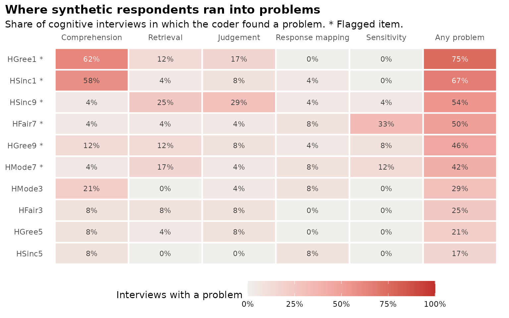

Cognitive interviews with language models
Source:vignettes/articles/cognitive-interviews.Rmd
cognitive-interviews.RmdThis tutorial runs simulated cognitive interviews: A language model plays each persona you define, thinks aloud while it answers a survey item, and then answers the verbal probes a cognitive interviewer would ask. A second call codes each transcript for problems. The result is a list of items and wording worth a closer look, most useful when you have no real respondents yet, for example right after a synthetic pretest.
It is a screening aid. A model does not remember its own life or feel uncomfortable, so it cannot stand in for cognitive interviews with real people or for a field test. Use it to decide what to bring to those.
Everything below runs with the mock provider, which
gives canned transcripts without calling an API. Swap in
sc_model("anthropic"), sc_model("openai") or
sc_model("ollama", ...) for a real run.
1. The protocol
Each interview is one conversation with one persona about one item. It follows the usual mix of think-aloud and scripted probes in cognitive interviewing (Willis, 2005; Beatty & Willis, 2007):
- Think-aloud and answer. The persona reads the statement, says what goes through its mind and answers on the scale.
-
Probes. The persona answers the probes from
sc_probes()in the same conversation. - Coding. A separate call with no persona reads the transcript and codes problems at the four stages of answering a survey question (Tourangeau, 1984): Comprehension, retrieval, judgement and response mapping, plus sensitivity. For each it gives a yes or no and a note with a quote, then an overall severity and a suggested rewording.
The default probes:
sc_probes()
#> # A tibble: 6 × 3
#> probe_id stage probe
#> <chr> <chr> <chr>
#> 1 paraphrase comprehension In your own words, what is this statement asking yo…
#> 2 terms comprehension Were there any words or phrases that were unclear, …
#> 3 retrieval retrieval What did you think about, or remember, to come up w…
#> 4 judgement judgement How sure are you of your answer? Was anything hard …
#> 5 response response Was it easy to pick a number on this scale? Did any…
#> 6 sensitivity sensitivity Would you, or people like you, feel uncomfortable a…Write your own with stage and probe, for
example a shorter protocol:
sc_probes(stage = c("comprehension", "comprehension", "response"),
probe = c("In your own words, what is this statement asking?",
"What does 'rules' mean to you here?",
"Was it easy to pick a number?"))
#> # A tibble: 3 × 3
#> probe_id stage probe
#> <chr> <chr> <chr>
#> 1 comprehension comprehension In your own words, what is this statement askin…
#> 2 comprehension_1 comprehension What does 'rules' mean to you here?
#> 3 response response Was it easy to pick a number?sc_interview_prompts() shows exactly what is sent for
one item:
h <- hexaco_items[hexaco_items$trait == "H", ]
h <- h[seq(1, nrow(h), by = 4), ] # ten items across the four facets
h$trait <- "Honesty-Humility"
ins <- sc_instrument(h, scale = c(1, 7), name = "HEXACO Honesty-Humility")
ins
#> Instrument "HEXACO Honesty-Humility": 10 items, answers 1 to 7.
#> Scales: Honesty-Humility
#> HSinc1: I don't pretend to be more than I am.
#> HSinc5: I switch my loyalties when I feel like it.
#> HSinc9: I find it necessary to please the people who have power.
#> ... and 7 more
p <- sc_interview_prompts(ins, h$item[1], "You are a 34-year-old nurse in Calgary.")
cat(p$system)
#> You are a 34-year-old nurse in Calgary.
#>
#> You are taking part in a cognitive interview about a survey. An interviewer will show you one survey statement, ask you to think aloud while you answer it, and then ask a few questions about it. Speak in the first person and in your own everyday words. There are no right or wrong answers. If something is unclear, odd or hard to answer, say so: That is the most helpful thing you can do. Stay in this role and speak as this person would.
cat(p$think_aloud)
#> Here is a statement from a survey. The survey's instructions are: "Please read each statement and decide how much you agree or disagree with it. There are no right or wrong answers. Answer every statement."
#>
#> Answer with a whole number from 1 to 7:
#> 1 = Strongly disagree
#> 2 = Disagree
#> 3 = Slightly disagree
#> 4 = Neither agree nor disagree
#> 5 = Slightly agree
#> 6 = Agree
#> 7 = Strongly agree
#>
#> Statement: "I don't pretend to be more than I am."
#>
#> Please think aloud: Read the statement, then tell me everything that goes through your mind as you decide how to answer it, in your own words. Then give your answer.
cat(p$probes)
#> Thank you. Now a few questions about that statement. Answer each one in your own words, in a few sentences.
#>
#> 1. In your own words, what is this statement asking you?
#> 2. Were there any words or phrases that were unclear, or that could mean different things? What did you take them to mean?
#> 3. What did you think about, or remember, to come up with your answer?
#> 4. How sure are you of your answer? Was anything hard about deciding?
#> 5. Was it easy to pick a number on this scale? Did any of the options fit poorly, or did you want an option that was not there?
#> 6. Would you, or people like you, feel uncomfortable answering this honestly? Is any of the wording sensitive or offensive?2. Personas
Choose personas that differ as much as your future respondents will: Age, education, first language, reading level, and anything the items touch on. Varied personas are what make the interviews useful.
per <- sc_persona_grid(
age = c(19, 45, 72),
education = c("did not finish high school", "has a university degree"),
template = "You are a {age}-year-old adult in Canada who {education}.")
per
#> # A tibble: 6 × 4
#> persona_id description age education
#> <chr> <chr> <dbl> <chr>
#> 1 p001 You are a 19-year-old adult in Canada who did not … 19 did not …
#> 2 p002 You are a 45-year-old adult in Canada who did not … 45 did not …
#> 3 p003 You are a 72-year-old adult in Canada who did not … 72 did not …
#> 4 p004 You are a 19-year-old adult in Canada who has a un… 19 has a un…
#> 5 p005 You are a 45-year-old adult in Canada who has a un… 45 has a un…
#> 6 p006 You are a 72-year-old adult in Canada who has a un… 72 has a un…3. Run the interviews
iv <- cognitive_interview(ins, list(sc_model("mock", name = "Model A"),
sc_model("mock", name = "Model B")),
per, coder = sc_model("mock", name = "Coder"), interviews = 2,
progress = FALSE)
#> 240 interviews (2 models x 6 personas x 10 items x 2 interviews): 720 requests.
iv
#> # A tibble: 240 × 31
#> model provider model_id coder persona_id age education item statement
#> <chr> <chr> <chr> <chr> <chr> <dbl> <chr> <chr> <chr>
#> 1 Model A mock mock Coder p001 19 did not fin… HSin… I don't …
#> 2 Model A mock mock Coder p001 19 did not fin… HSin… I don't …
#> 3 Model A mock mock Coder p001 19 did not fin… HSin… I switch…
#> 4 Model A mock mock Coder p001 19 did not fin… HSin… I switch…
#> 5 Model A mock mock Coder p001 19 did not fin… HSin… I find i…
#> 6 Model A mock mock Coder p001 19 did not fin… HSin… I find i…
#> 7 Model A mock mock Coder p001 19 did not fin… HFai… I return…
#> 8 Model A mock mock Coder p001 19 did not fin… HFai… I return…
#> 9 Model A mock mock Coder p001 19 did not fin… HFai… I cheat …
#> 10 Model A mock mock Coder p001 19 did not fin… HFai… I cheat …
#> # ℹ 230 more rows
#> # ℹ 22 more variables: pretest <chr>, interview <int>, answer <int>,
#> # think_aloud <chr>, probe_paraphrase <chr>, probe_terms <chr>,
#> # probe_retrieval <chr>, probe_judgement <chr>, probe_response <chr>,
#> # probe_sensitivity <chr>, comprehension <lgl>, comprehension_note <chr>,
#> # retrieval <lgl>, retrieval_note <chr>, judgement <lgl>,
#> # judgement_note <chr>, response <lgl>, response_note <chr>, …The message gives the number of interviews and requests (three per interview) before anything is sent. This run, with two models, six personas, ten items and two interviews each, is 240 interviews, which costs little on the default models. All 240 HEXACO items would be 24 times more, so start with the items you are least sure of.
Use a different model as coder in real runs, so that no
model grades its own interviews. Two or more respondent models also
help: Personas from one model tend to sound alike.
iv <- cognitive_interview(ins, list(sc_model("anthropic"), sc_model("openai")), per,
coder = sc_model("anthropic", "claude-sonnet-5-5"),
parallel = 4, output = "interviews_honesty")With output, the table is saved with
run.json and one Markdown file of transcripts per item in
transcripts/, which is the easiest way to read them.
4. Summarise per item
s <- summarise_interviews(iv)
s
#> 6 of 10 items are flagged: HGree1 (75% of interviews, mostly
#> comprehension); HSinc1 (67% of interviews, mostly comprehension);
#> HSinc9 (54% of interviews, mostly judgement); HFair7 (50% of
#> interviews, mostly sensitivity); HGree9 (46% of interviews, mostly
#> comprehension), and 1 more. These are screening results from language
#> models: Use them to choose items for cognitive interviews with real
#> people and a field test, not to replace them.
#>
#> # A tibble: 10 × 9
#> item comprehension retrieval judgement response sensitivity any models
#> <chr> <dbl> <dbl> <dbl> <dbl> <dbl> <dbl> <int>
#> 1 HGree1 0.625 0.125 0.167 0 0 0.75 2
#> 2 HSinc1 0.583 0.0417 0.0833 0.0417 0 0.667 2
#> 3 HSinc9 0.0417 0.25 0.292 0.0417 0.0417 0.542 2
#> 4 HFair7 0.0417 0.0417 0.0417 0.0833 0.333 0.5 2
#> 5 HGree9 0.125 0.125 0.0833 0.0417 0.0833 0.458 2
#> 6 HMode7 0.0417 0.167 0.0417 0.0833 0.125 0.417 2
#> 7 HMode3 0.208 0 0.0417 0.0833 0 0.292 2
#> 8 HFair3 0.0833 0.0833 0.0833 0 0 0.25 2
#> 9 HGree5 0.0833 0.0417 0.0833 0 0 0.208 2
#> 10 HSinc5 0.0833 0 0 0.0833 0 0.167 2
#> # ℹ 1 more variable: flagged <lgl>Each row is one item: The share of interviews with a problem at each
stage and at any stage, how many personas and models raised one, the
stage that drives it, and the coder’s most common notes and rewordings.
An item is flagged when at least 30% of its interviews found a problem
(change it with flag) and, with two or more models, at
least two models found one.
s[s$flagged, c("item", "statement", "top_stage", "notes", "revisions")]
#> # A tibble: 6 × 5
#> item statement top_stage notes revisions
#> <chr> <chr> <chr> <chr> <chr>
#> 1 HGree1 I would not enjoy being a famous celebrity. comprehe… "The… Reword w…
#> 2 HSinc1 I don't pretend to be more than I am. comprehe… "The… Reword w…
#> 3 HSinc9 I find it necessary to please the people who… judgement "Har… Use plai…
#> 4 HFair7 I cheat to get ahead. sensitiv… "Inv… Use plai…
#> 5 HGree9 I prefer to eat at expensive restaurants. comprehe… "It … Use plai…
#> 6 HMode7 I like to attract attention. retrieval "It … Use plai…5. One picture
gg_interview(s)
Rows are items, with the most problems at the top. Pale is no problem, red is a problem in most interviews, and an asterisk marks a flagged item.
6. Read the transcripts
The codes point to where to look; the transcripts show why:
one <- iv[iv$item == s$item[1], ][1, ]
cat(one$think_aloud, "\n\n")
#> Okay, "I would not enjoy being a famous celebrity." Wait, there's a 'not' in there, so I have to read it twice. I think about how I usually am, day to day. I'd go with strongly agree.
cat(one$probe_paraphrase, "\n")
#> I think it's asking whether I don't do it... or do? Not sure.
cat(one$comprehension_note, "\n")
#> The negation was misread: "I think it's asking whether I don't do it... or do?"7. After a pretest
The pretest is optional: Without one, the interviews cover all items,
or the ones you name in items. When you have run a
synthetic pretest, pass its result as pretest. The
interviews then cover the flagged items (most often flagged first), and
each gets one more probe aimed at the reason for its flag: A weak link
to its scale becomes “Does this statement seem to be about the same
thing as statements about Honesty-Humility?”, a near-duplicate becomes
“Does this statement seem to ask the same thing as another statement?”,
and so on. A data frame with item and flag
columns works too:
flags <- data.frame(item = h$item[c(5, 2)],
flag = c("Weak link to its scale", "Reverse key not working"))
iv2 <- cognitive_interview(ins, list(sc_model("mock", name = "Model A"),
sc_model("mock", name = "Model B")),
per, pretest = flags, interviews = 2, progress = FALSE)
#> Interviewing about the 2 items flagged by the pretest.
#> 48 interviews (2 models x 6 personas x 2 items x 2 interviews): 144 requests.
summarise_interviews(iv2)
#> 1 of 2 items is flagged: HFair7 (71% of interviews, mostly
#> sensitivity). The pretest also flagged HFair7, so it is the first to
#> revise. These are screening results from language models: Use them to
#> choose items for cognitive interviews with real people and a field
#> test, not to replace them.
#>
#> # A tibble: 2 × 10
#> item comprehension retrieval judgement response sensitivity any models
#> <chr> <dbl> <dbl> <dbl> <dbl> <dbl> <dbl> <int>
#> 1 HFair7 0.0833 0.0417 0.0417 0.0833 0.583 0.708 2
#> 2 HSinc5 0.125 0.0417 0.0833 0.0417 0.0417 0.292 2
#> # ℹ 2 more variables: flagged <lgl>, agreement <chr>agreement says whether an item was flagged by both the
pretest and the interviews, by one of them, or by neither. Items flagged
by both are the first to revise.
In the app
The app runs the same interviews on screen. On the About tab, answer No, not yet to the first question, and the app adds an Interviews tab (5) after the Pretest tab. It uses the personas and models of the Personas and Models tabs, interviews the items the pretest flagged or items you choose, lets you edit the probes and pick the coder, and shows the summary, the heatmap and the transcripts. See the tour of the app.
What the interviews can and cannot tell you
- Most useful: Comprehension and response mapping. Vague words, double negatives, two questions in one, or a scale that fits poorly show up in the paraphrases and the probes.
- Least useful: Retrieval and judgement. A model guesses what such a person might say; it has no memories to search.
- Too easy: Models understand items better than many real respondents, so an item without problems here is not shown to work.
- Too alike: Personas played by one model sound alike. More models and more varied personas help, but do not fix it.
The interviews choose what to take to cognitive interviews with real people and a field test. They do not replace either.
References
- Beatty, P. C., & Willis, G. B. (2007). Research synthesis: The practice of cognitive interviewing. Public Opinion Quarterly, 71(2), 287-311.
- Tourangeau, R. (1984). Cognitive science and survey methods. In T. Jabine, M. Straf, J. Tanur & R. Tourangeau (Eds.), Cognitive aspects of survey methodology: Building a bridge between disciplines (pp. 73-100). National Academy Press.
- Willis, G. B. (2005). Cognitive interviewing: A tool for improving questionnaire design. Sage.
- Willis, G. B., & Lessler, J. T. (1999). Question Appraisal System QAS-99. Research Triangle Institute.